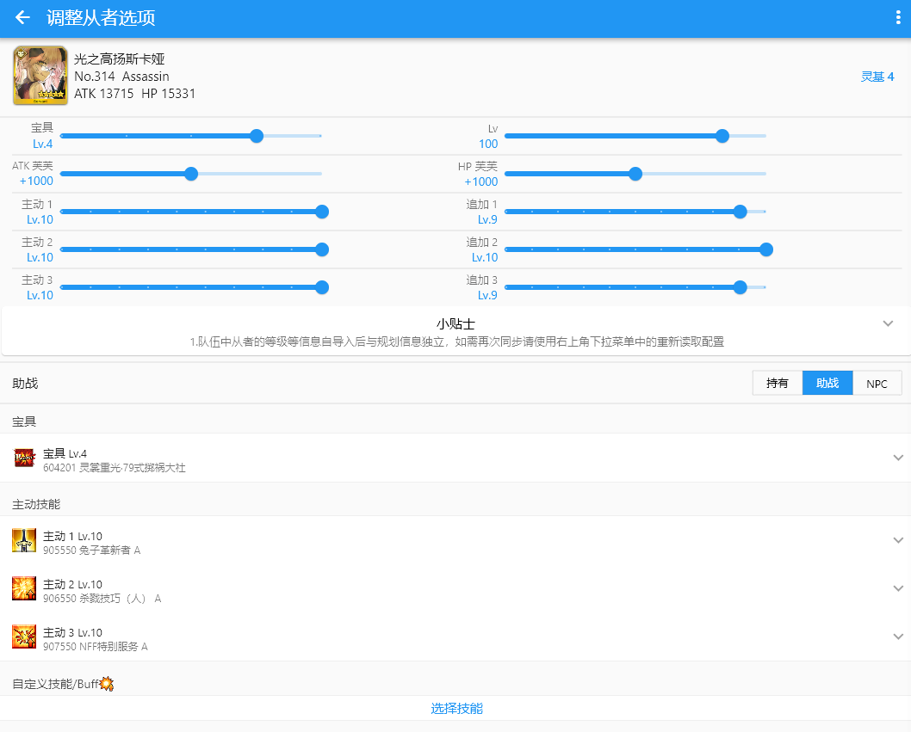
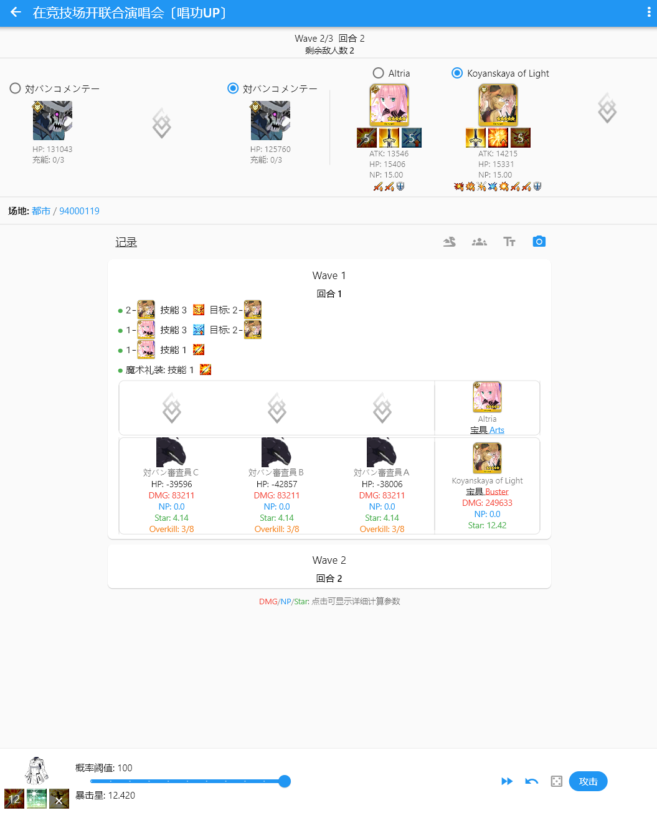

用了半年 Chaldea，踩过这四个坑之后终于省心了
作为一个迦里六十多个五星的老 Master，Chaldea 的素材规划和战斗模拟是我每天都在开的工具。但刚上手时踩的几个坑，差点让我把这个好软件卸载。写下来给同好提个醒。
前言
Chaldea 这东西，官网看着挺简单的——一个 FGO 素材规划加战斗模拟的工具，开源免费，跨平台。刚装上的时候我以为就是导个数据、设个目标，完事。结果第一个坑就把我吓得不轻。
那天清理手机存储空间，看到 Chaldea 占了 200 多 MB，想都没想就卸载了。想换个版本重装嘛，多大点事。然后……然后我的素材库存、从者练度规划、Laplace 里存的十几个配队，全没了。
所以这篇就聊聊我踩过的几个实打实的坑，提前避开比事后哭强。
坑一：iOS 上卸载 = 数据清零，没有任何补救
症状：卸载完 Chaldea 重装，打开发现是全新空白状态，之前导好的 userdata.json 不见了。
原因：iOS 的沙盒机制决定了——卸载应用时系统直接把沙盒目录整个删掉，App 没有任何机会弹出"要不要保留数据"的确认框，更没有安卓那种"清除缓存"和"清除数据"分开的选项。Chaldea 的所有数据（从者列表、素材库存、Laplace 配队）全在沙盒里，卸载等于一把火烧了。
我之前以为"反正服务器上有在线备份"——但想起来我当初注册 Chaldea 账号的时候嫌麻烦没开在线备份功能。纯本地存储，一把梭没了。
解法：两条路，都得提前做。
第一，定期手动备份。在 iOS 的"文件"应用里找到 Chaldea 的沙盒目录（我的iPhone / Chaldea /），把里面的 userdata.json 复制出来，存到 iCloud Drive 或者电脑上。频率嘛，每周一次差不多，如果你每天都在刷 Free 本、改配队，就勤快一点。
第二，开在线备份或者 GitHub 同步。Chaldea 支持把数据同步到自己的服务器，也支持推到你自己的 GitHub 仓库。后者更靠谱——毕竟 GitHub 是你自己的东西，删账号也删不动。
防坑清单：iOS 用户、换设备前、准备卸载重装前，这三个场景务必先备份。

坑二：注册账号用了常用密码，后来看文档才知道安全警告
症状：倒不是账号被盗了——用了半年也没出事。但某天翻到chaldea文档里账号删除那节，赫然写着一行加粗的提醒：「没有安全保证，请勿使用常用密码」。
原因：Chaldea 是开源项目，AGPL-3.0 协议。开源意味着代码透明、社区可以审，但也意味着它不是商业化产品，没有资金做专业的安全审计。账号系统用的是密码加 UUID 的简单机制，文档作者自己也承认"足够防君子但不够防小人"。
问题在于——我当初注册的时候根本没仔细看这些。Chaldea 是我 GitHub 上随便挑的一个 FGO 工具，想着"反正只是存点游戏数据"，直接用了邮箱主密码。
解法：改密码，专门为 Chaldea 搞一个。注册流程里没有强制要求密码强度，你自己得留个心眼。改完之后，如果还是担心，App 内有自助删除账号的入口——设置 → 用户页面 → 输入用户名密码 → 点 DELETE，服务器上的备份和共享队伍记录立刻清空。删完想继续用的话，重新注册一个新账号就行，本地数据不受影响。
坑三：国内 Apple ID 在 App Store 搜不到，以为软件下架了
症状：帮朋友装，他说搜不到。我用自己的账号一搜，有啊。后来才发现他用的是国内 Apple ID，我用的是美区。
原因：Chaldea 没有在大陆 App Store 上架，只在海外区分发。开发者署名 narumi147，App Store ID 是 1548713491。国内 Apple ID 搜不到不是软件下架了，是商店策略的问题。
解法：换个非大陆区的 Apple ID（美区、日区、港区都行），登录后就能搜到。嫌麻烦的话，从下载页拿 Web 版就行——国内访问还有加速域名 cn.chaldea.center，功能和 App 端几乎一致。我平时电脑上刷 Free 本的时候反而更喜欢用 Web 版，屏幕大操作方便。

坑四：iOS 版本更新总是慢半拍，以为自己装错了渠道
症状：Android 朋友说某个新功能已经上线了，我打开 App Store 检查更新，显示最新版。对比了一下版本号，确实落后好几天。
原因：Flutter 跨平台的优势是一套代码多端编译，更新应该同步。但 iOS 有个 App Store 审核环节——每次提交新版本都要过苹果的审核，少则一两天，多则四五天。Android 那边作者直接发 APK 到 GitHub Release，秒更。所以 iOS 版本系统性地比其他平台慢，这是正常现象，不是你装错了。
解法：忍着等。等不及的话临时切一下 Web 版，Web 端更新和 Android 同步。不要随便装第三方分发的 iOS 版本——企业证书随时会被苹果 revoke，开发者账号签名又需要续费，不稳定。官方只维护 App Store 一个渠道是有道理的。
最后：防坑速查清单
把上面几个坑浓缩成几条，每次想操作之前扫一眼：
- 用 iOS 的，任何情况下别直接卸载——先把 userdata.json 从文件 App 里拷出来
- Chaldea 账号用专门的独立密码，别复用邮箱主密码、银行卡密码
- 国内 Apple ID 搜不到 Chaldea 是正常的，要么换海外区账号要么用 Web 版
- iOS 更新慢半拍是 App Store 审核延迟，不是软件出了问题
- 想删账号≠想删本地数据，两个操作互不影响，搞清楚再动手
知道这些之后，Chaldea 其实相当省心——素材缺口算得准，Laplace 模拟器调配队比在游戏里反复开节约一半时间，跨平台数据也够用。踩坑不可怕，提前知道哪里会踩就行。关于这套资料的同步，我在GitHub、Gitee、GitCode三个仓库都留了镜像，国内访问哪个顺手就拉哪个。